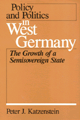

<body bgcolor="#FFFFFF" text="#000000" link="#0000FF" vlink="#CC0000" alink="#CC0000"><center><hr width="350" size="1" align="center" noshade>Examines in detail how West German policy and politics interrelate<hr width="350" size="1" align="center" noshade><p><a href="https://cdcshoppingcart.uchicago.edu/Cart/ChicagoBook.aspx?ISBN=9780877222637&&PRESS=temple" target="_top">Buy this book!</a> | <a href="https://cdcshoppingcart.uchicago.edu/Cart/Cart.aspx?PRESS=temple" target="_top">View Cart</a> | <a href="https://cdcshoppingcart.uchicago.edu/Cart/Cart.aspx?PRESS=temple" target="_top">Check Out</a></p><p></p></center><!--none//--><h1>Policy and Politics in West Germany</h1>
<H2>The Growth of a Semisovereign State</H2>
<h3>Peter J. Katzenstein</h3>
<P>cloth 0-87722-263-0 $34.95, May 87, <FONT COLOR=#990033>Out of Print</FONT>
<br>paper 0-87722-264-9 $35.95, May 87, <FONT COLOR=#990033>Available</FONT>
<BR> 464 pp
</P><BLOCKQUOTE><I>"Admirably clear and well written from a new viewpoint, this is the best informed and most thoughtful analysis of the political system of West Germany. Anyone seriously interested in the German Federal Republic should read it."</I>
<br>&#151<b>Karl Deutsch</b>, Stanfield Professor of International Peace, Harvard Emeritus<I></I></BLOCKQUOTE>
<p>How can we account for the lack of large-scale policy change in West Germany despite changes in the partisan make-up of the federal government? This formulation of "the German Question" differs from the one commonly posed by students of German politics, a version usually focused on Germany’s tragic confrontation with modernity and a possible revival of militarism and authoritarianism. Katzenstein here uncovers the political structures that make incremental policy change such a plausible political check against the growing force of government.
<p>This book examines in detail how West German policy and politics interrelate in six problem areas: economic management, industrial relations, social welfare, migrant workers, administrative reform, and university reform. Throughout these six case studies, Katzenstein suggests that West Germany’s semi-sovereign state provides the answer to the German Question as it precludes the possibility of central authority. Coalition governments, federalism, para-public institutions, and the state bureaucracy are the domestic forces that have tamed power in the Federal Republic.
<BR>&nbsp;<H2>About the Author(s)</H2>
<P><b>Peter J. Katzenstein</b> is Professor of Government at Cornell University, as well as a former editor of International Organization.</P>
<BR><H2>Subject Categories</H2>
<p><A HREF="/tempress/political.html" TARGET="_top">Political Science and Public Policy</a>
</p>
<BR><h2 class="inpageheading">In the series</H2>
<P><I><a href="http://www.temple.edu/tempress/policy_politics.html" onMouseOver="window.status='Click for other books in this series!'; return true;" onMouseOut="window.status=''; return true;" target="_top">Policy and Politics in Industrial States</a></i>, edited by Douglas E. Ashford, Peter J. Katzenstein, and T.J. Pempel.
</p><p>Each volume in <i>Policy and Politics in Industrial States</i>, edited by Douglas E. Ashford, Peter J. Katzenstein, and T.J. Pempel, is a sophisticated textbook that focuses on a single country but in a comparative policy context. Each consists of a balance of analysis and primary documents for six major issues. The issues include topics like economic policy, labor relations, social welfare, and the internal organization of the state.</p>
<p align="center"><a href="https://cdcshoppingcart.uchicago.edu/Cart/ChicagoBook.aspx?ISBN=9780877222637&&PRESS=temple" target="_top">Buy this book!</a> | <a href="https://cdcshoppingcart.uchicago.edu/Cart/Cart.aspx?PRESS=temple" target="_top">View Cart</a> | <a href="https://cdcshoppingcart.uchicago.edu/Cart/Cart.aspx?PRESS=temple" target="_top">Check Out</a></p><p><font face="Arial" size="1"><a href="copyright.html" onMouseOver="window.status='Web Copyright Policy';return true;" onMouseOut="window.status=''" title="Web Copyright Policy">&copy;</a> 2015 <a href="http://www.temple.edu" target="new" onMouseOver="window.status='Link to Temple University home page';return true;" onMouseOut="window.status=''" title="Link to Temple University home page">Temple University</a>. All Rights Reserved. http://www.temple.edu/tempress/titles/260_reg.html</font></p>